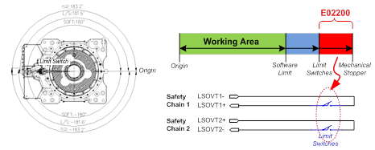
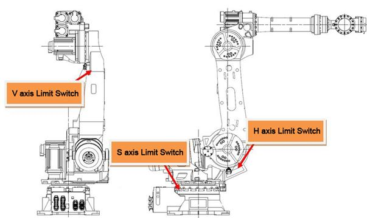

Previous error code: E0002 Hardware limit switch in operation
1.1.25.1. Outline
Limit switch that is installed at the end of operation area of Robot's each axis has been activated. The Robot will be immobilized immediately for a safety reason and will not be operational until it is moved to a safe operation area by an appropriate method.
1.1.25.2. Causes and examine methods
|
(1) The robot deviated from the hardware operation area.
(2) Move the robot inside the operation area. n Methods for recovery when deviating from the operation area |
(1) The robot deviated from the hardware operation area.
Please confirm if the Robot actually went out of operation area. The software limit error may occur while the robot is deviating from the maximum operation area. Please take an appropriate action to move the Robot back into the operation area.

Figure 1.118 E02200 Occurs while the main body limit switch is in operation
Operation area may vary to the each Robot model, so as the installed location of limit switches. Please refer to the corresponding Robot's maintenance manual - "Limitations of Operation area"

Figure 1.119 Example of the position for installing a hardware limit switch (HS165/HS200)
Figure 1.120 Example of the hardware limit switch operation range (HS165/HS200 S axis)
(2) Move the robot inside the operation area.
Move the robot inside the operation area by referring to the following methods for recovery when it has deviated from the operation area.
n Methods for recovery when deviating from the operation area
Execution should be carried out according to the following conditions and sequence to move the robot while the hardware limit switch is in operation.
A) Enter from the manual mode to the system mode.
B) Hold the enabling switch in the teach pendant.
C) Turn on the motor in this state.
D) Move the robot into the inside of the operation area using the jog key.